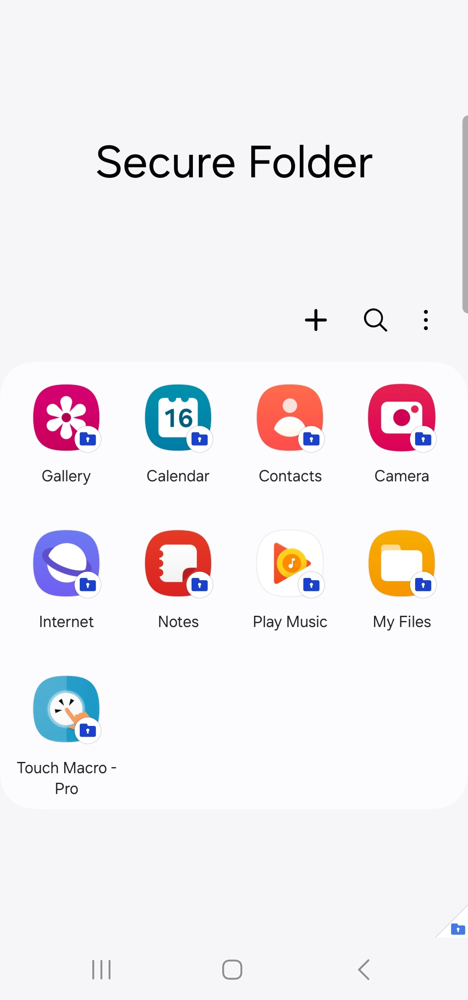
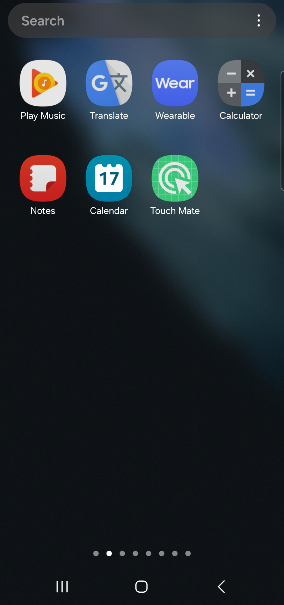

TouchMacro
터치 메이트
- 게임 앱이 터치 매크로 앱을 차단한 경우 우회하여 터치매크로 대신 터치 기능을 대신해 주는 앱입니다.
- 터치 메이트를 접근성을 사용할 수 있는 일반 앱 설치 영역에 설치하고, 터치 매크로는 보안폴나 워크스페이스에 설치하세요.
보안폴더 밖에 있는 앱은 보안폴더 안에 있는 앱을 감지할 수 없습니다.
- 터치 매크로 앱을 보안폴더 또는 워크스페이스에 설치할 경우 접근성 권한을 사용할 수가 없기 때문에 클릭 기능이 동작하지 않습니다. 그렇기 때문에 보안폴더 안에 있는 터치 매크로 앱의 터치 기능을 도와주는 터치 메이트 앱을 보안폴더 밖에 설치해야 합니다.
설치
-
터치 메이트 앱을 다운로드합니다.
-
터치 매크로 앱을 보안폴더 안에 설치합니다.

-
터치 메이트는 보안폴더가 아닌 곳에 설치하세요.

접근성 권한
-
Android 14 스마트폰에서 접근성 권한을 활성화 하는 동영상입니다.

터치매크로 동영상
-
게임 앱이 터치 매크로 앱을 차단한 경우 우회하여 터치 매크로를 사용하는 동영상입니다.